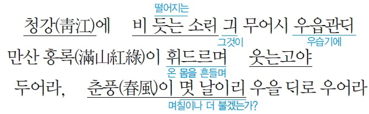
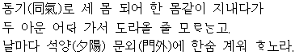
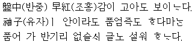

떠나가노라 삼각산이여! (언제가 될지 모르지만) 다시 보자 한강물이여!
(할 수 없이 이 몸은) 고국 산천을 떠나가려고 하지만
시절이 하도 뒤숭숭하니 다시 돌아올지 어떨지는 모르겠구나.
작자 : 김상헌(1570∼1652)
종류 : 평시조, 비분가(悲憤歌)
성격 : 비분강개, 애국적
제재 : 척화파(斥和派)로 심양에 잡혀간 것
주제 : 우국지사(憂國之士)의 비분 강개한 심경
출전 : <청구영언>
풀이
맑은 강물에 비 떨어지는 소리가 무엇이 우습기에
온 산을 뒤덮은 울긋불긋한 꽃과 나무들이 몸을 흔들며 웃는구나.
내버려 두어라, 이제 봄바람인들 며칠이나 더 불랴, (만산의 홍록아) 웃을 대로 웃어라.
지은이 : 봉림대군(효종)
제재 : 빗소리
주제 : 청나라에 대한 원한에 찬 심경
풀이 (네이버 블로그)
국화(菊花)야 너는 어이 삼월동풍(三月東風) 다 지내고
낙목한천(落木寒天)에 네 홀로 퓌였는다
아마도 오상고절(傲霜高節)은 너뿐인가 하노라.
국화야 너는 어찌하여 따뜻한 봄철이 다 지나간 후에야
이렇게 잎이 지고 추운 계절에 너 홀로 피어 있느냐?
아마도 오상고절(매서운 서리를 이겨내는 꿋꿋하고 높은 절개)은 너 뿐인가 하노라.
지은이 : 이정보
형식 : 평시조, 절개가
성격 : 예찬적, 의지적
제재 : 국화
표현 : 의인법
주제 : 선비의 높은 절개와 굳은 지조
출전 : 해동가요
풀이
형제로서 세 사람의 몸이지만 한 몸처럼 가까이 지내다가
두 아우는 어디 가서 돌아올 줄 모르는가?
날마다 해 지는 문 밖에 서서 한숨을 못 이겨 하노라.
세 명이 같은 가족이 되어 마치 한 몸 같이 지내다가
두 아우는 어디 가서 돌아올 줄 모르는가
날마다 석양이 내릴 즈음에 문 밖에 서서 한숨을 못 이기노라.
지은이 : 박인로(朴仁老)
갈래 : 평시조, 단시조
연대 : 조선 전기
성격 : 감상적, 애상적, 도덕적, 교훈적, 망제가(望弟歌)
표현 : 영탄법, 비유법
특징 : 장면 묘사를 통해 간접적으로 작가의 심정을 표현함
제재 : 형제 간의 우애, 두 아우와의 이별
주제 : 아우들과 헤어진 서글픈 심정, 혈육(血肉)을 그리는 심정, 형제간의 지극한 우애
출전 : 노계집(蘆溪集)
풀이
소반에 놓인 붉은 감이 곱게도 보이는구나.
비록 유자가 아니라도 품어 갈 마음이 있지마는
품어 가도 반가워해 주실 부모님이 안 계시니 그를 서러워합니다.
지은이 : 박인로(朴仁老)
갈래 : 평시조
성격 : 사친가(思親歌)
표현 : 인용법
제재 : 조홍감
주제 : 효심(孝心), 부모에 대한 그리움
출전 : 노계집
풀이